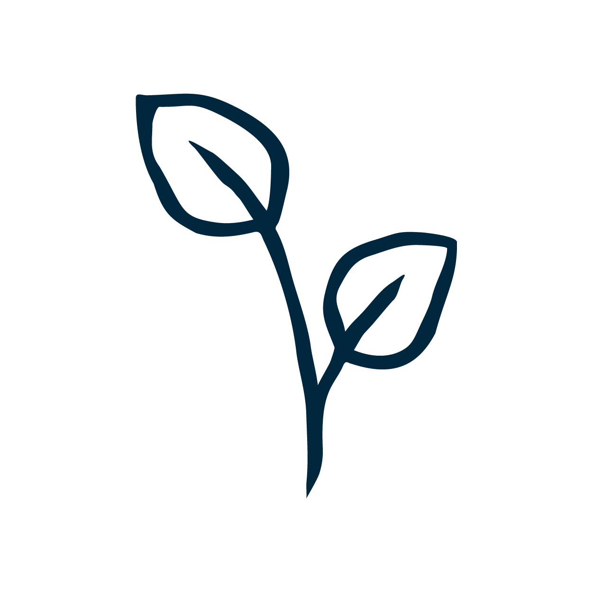

Reusable
Our mission is to break the myth that intimate reusables are complicated - we found comfort in simplicity and believe that reusables are worthy to become a natural habit of each woman.

Hand-made
Our products are made with love by hands of Danute following the unique Ruta's designs and tested by both of us in order to reach the maximum level of comfort and quality.

Sustainable
Our products are made using carefully picked 100% natural antibacterial linen and 100% waterproof but breathable cotton which is certified by Oeko-Tex 100 standard.